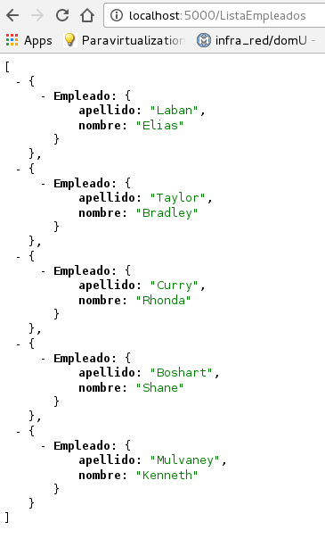

Trabajar con datos JSON en Flask
Posted on dom 25 septiembre 2016 in Tutorial Python • 3 min read
Este artículo es la continuación del artículo anterior Crear datos JSON a partir de un diccionario en Flask (parte 1) (actualización- Docker).
Este artículo se basa del artículo en inglés: Working with JSON in Python Flask.
El código fuente de este artículo lo pueden bajar de la rama json2 en gitlab.
Los demás artículos sobre Flask lo pueden ver en enlace de la etiqueta Flask.
Archivos Dockerfile y docker-compose.yml
En el archivo Dockerfile se agrega la instalación de la librería names a cual facilita el manejo de nombres y apellidos de manera aleatoria para ser usado en la aplicación cliente app.py en la clase Empleado.
El código completo del archivo Dockerfile es el siguiente:
FROM python
WORKDIR /code
RUN pip3 install --upgrade pip
RUN pip3 install flask
RUN pip3 install names
EXPOSE 5000
ADD . /code
CMD python app.py
El archivo docker-compose.yml tiene lo siguiente:
tutorial-json2:
build: .
ports:
- "5000:5000"
volumes:
- .:/code
Clase Empleado
Para este artículo se crea un módulo llamado empleado.py que tiene una clase Empleado, la cual se guarda el nombre y apellido del empleado en el __init__, luego se crea un método el cual permite crear un json a partir de un diccionario:
def toJSON(self):
return {"Empleado": {'nombre': self.nombre,
'apellido': self.apellido}}
El código completo de empleado.py se muestra a continuación:
#!/usr/bin/env python
"""Se cra la insancia Empleado
Se crea el constructor donde se le pasa el nombre y apellido
"""
class Empleado:
def __init__(self,nombre,apellido):
self.nombre = nombre
self.apellido = apellido
def toJSON(self):
return {"Empleado": {'nombre': self.nombre,
'apellido': self.apellido}}
Aplicación app.py
En este caso se usa el módulo names el cual permite generar nombres y apellidos de manera aleatoria, se usa la clase Empleado para guardar los datos:
#!/usr/bin/env python
#Se importa de flask a Flask, jsonify y json
from flask import Flask,jsonify,json
#Se importa empleados import Empleado
from empleado import Empleado
#Se importa names
import names
#Se importa sys
import sys
#Se crea la instancia de la aplicacion
app = Flask(__name__)
#Se crea
#Se define el decorador route donde se da la ruta del servidor web.
@app.route("/ListaEmpleados")
def ListaEmpleados():
try:
#inicializar la lista de empleados
listaEmpleados = []
#crear instancias para llenar la lista
for i in range(0,5):
empleado = Empleado(names.get_first_name(),names.get_last_name())
listaEmpleados.append(empleado)
# convertir en dato json al diccionario
jsonStr = json.dumps([e.toJSON() for e in listaEmpleados])
except :
print ("error", sys.exc_info()[0])
#Retorna el json
return jsonStr
if __name__ == '__main__':
app.run(host="0.0.0.0",debug=True)
Ejecución de la aplicación
Para ejecutar la aplicación se ejecuta docker-compose:
docker-compose build
docker-compose up
Al abrir el url (http://localhost:5000/ListaEmpleados ) se muestra la lista de empleados con su nombre y su apellido (nombres y apellidos aleatorios).
A continuación se muestra una captura de pantalla del navegador:

Para terminar se muestra la salida de la aplicación:
Recreating tutorialflask_tutorial-json1_1
Attaching to tutorialflask_tutorial-json1_1
tutorial-json1_1 | * Running on http://0.0.0.0:5000/ (Press CTRL+C to quit)
tutorial-json1_1 | * Restarting with stat
tutorial-json1_1 | * Debugger is active!
tutorial-json1_1 | * Debugger pin code: 733-227-386
tutorial-json1_1 | 172.17.0.1 - - [25/Sep/2016 20:34:42] "GET /ListaEmpleados HTTP/1.1" 200 -
¡Haz tu donativo! Si te gustó el artículo puedes realizar un donativo con Bitcoin (BTC) usando la billetera digital de tu preferencia a la siguiente dirección: 17MtNybhdkA9GV3UNS6BTwPcuhjXoPrSzV
O Escaneando el código QR desde la billetera: